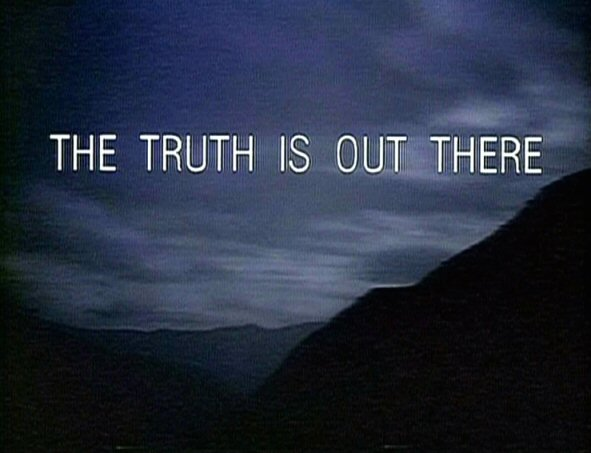
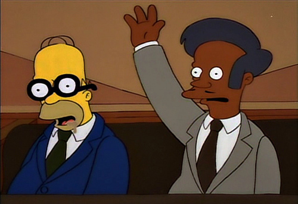
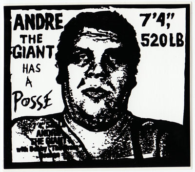

JS MVC, Backbone.js, and YOU
Or: Say Goodbye to Spaghetti JS
Your single page web app's JS code is becoming a mess.
You need a framework that’s:
- Minimalist
- Stable
- Extensible
Backbone.js brings your truth out of the dom
Minimalist MV* for JS
Backbone.JS Quick Start
Dependencies
The Absurdly Easy Instantiation
//Model
var Todo = Backbone.Model.extend({
defaults: {
title: '',
completed: false
}
});
var myTodo = new Todo({title:'Read the whole book', id: 2});
//Collection
var TodosCollection = Backbone.Collection.extend({
model: Todo,
});
var todos = new TodosCollection([myTodo]);
//Views
var TodoView = Backbone.View.extend({
tagName: 'li',
// Cache the template function for a single item.
todoTpl: _.template( $('#item-template').html() ),
events: {
'dblclick label': 'edit',
'keypress .edit': 'updateOnEnter',
'blur .edit': 'close'
},
// Re-render the titles of the todo item.
render: function() {
this.$el.html( this.todoTpl( this.model.toJSON() ) );
this.input = this.$('.edit');
return this;
},
edit: function() {
// executed when todo label is double clicked
},
close: function() {
// executed when todo loses focus
},
updateOnEnter: function( e ) {
// executed on each keypress when in todo edit mode,
// but we'll wait for enter to get in action
}
});
var todoView = new TodoView();
Models:
Embrace Your JS OCD
JS Data Without Models
var todo = { description: 'Pick up milk', status: 'incomplete', id: 1 };
<h3 class='incomplete'>
<input type='checkbox' data-id='1' />
Pick up milk
</h3>
- Likely to get real ugly, real fast
Backbone.js Model
define([
'underscore',
'backbone'
], function( _, Backbone ) {
var TodoModel = Backbone.Model.extend({
// Default attributes for the todo
defaults: {
title: '',
completed: false
},
// Toggle 'completed' state of this todo item.
toggle: function() {
this.save({
completed: !this.get('completed')
});
}
});
return TodoModel;
});
Getters, Setters, & Ch-ch-changes
- Access model attributes with
Model.get() - Pass attributes to model instance with
Model.set() - Add listeners to monitor changes to model or specific attributes
Collections:
Backbone.Model Has a Posse

Access Your Collections
- Get models by id with
Collection.get() - Add and remove models via
.add()and.remove() - Listen for models being added/removed to collection
- Or lisen to change events on all models in a collection
- Use
.update()to sync entire collections with server
Views:
I Represent Models for the User

All about el
- Apps typically consist of a main app view and individual views for important models/collections
- All views have a DOM element reference via
el elcan be assigned to an existing element or created newly via the framework
render() and the Technicolor Templates
<span id="todo-count"><strong><%= remaining %></strong> <%= remaining == 1 ? 'item' : 'items' %> left</span>
<ul id="filters">
<li>
<a class="selected" href="#/">All</a>
</li>
<li>
<a href="#/active">Active</a>
</li>
<li>
<a href="#/completed">Completed</a>
</li>
</ul>
<% if ( completed ) { %>
<button id="clear-completed">Clear completed (<%= completed %>)</button>
<% } %>
render()is an optional function that defines the logic for rendering a template- Works with Underscore's built in micro-templates out of the box
- Easily configured to work Mustache.js, Handlebars.js, and more
Events All Up in Your Views
- Easily add event listeners to custom selectors or
el - Supports common DOM event-types:
click,submit,mouseover,dblclick, and more - Backbone makes sure that
thisalways refers to the current view object so you don't have to
Routers:
Glovesy Traffic Cops of Backbone
#hashing out Statefulness
- Uses browser's pushState and History API
- Fallback support via hash-tags with URL fragments
- Use
Backbone.history.start()to begin monitoringhashChangeevents
Sync API and Friends
- Built-in method is tailored to RESTful JSON APIs
- Is designed to be overriden to support other backends
Backbone.js Router
define([
'jquery',
'backbone',
'collections/todos',
'common'
], function( $, Backbone, Todos, Common ) {
var Workspace = Backbone.Router.extend({
routes:{
'*filter': 'setFilter'
},
setFilter: function( param ) {
// Set the current filter to be used
Common.TodoFilter = param.trim() || '';
// Trigger a collection filter event, causing hiding/unhiding
// of the Todo view items
Todos.trigger('filter');
}
});
return Workspace;
});
Stability & Extensibility
Backbone:
Real World Use
- Wordpress 3.5
- DocumentCloud
- USA Today
- Foursquare (homepage map and lists)
- Hulu
- A hojillion more...
All About Extensibility
- Backbone localStorage - local storage for Backbone
- RequireJS - for AMD patterns
- Backbone Boilerplate and Grunt-BB - quickstart with best practices
- Marionette.js - simplifies full-blown large scale JS apps
Further Resources
- Backbonejs.org - exhaustive dox
- The Backbone Repo
- Developing Backbone.js Applications - open source e-book by Addy Osmani